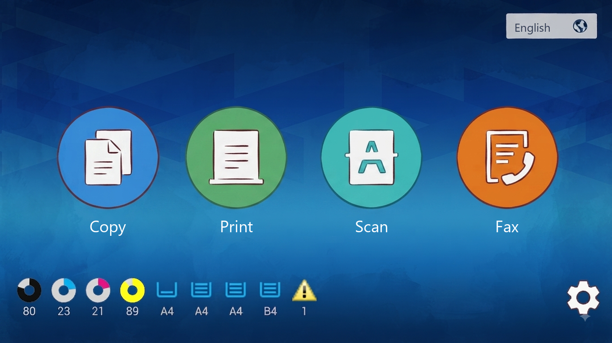
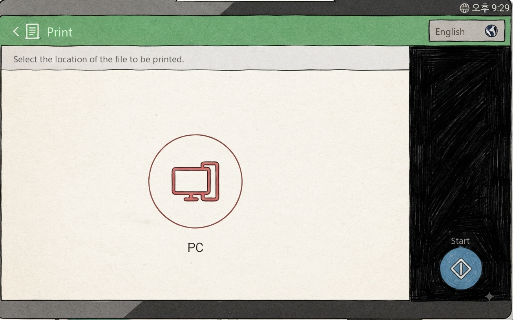
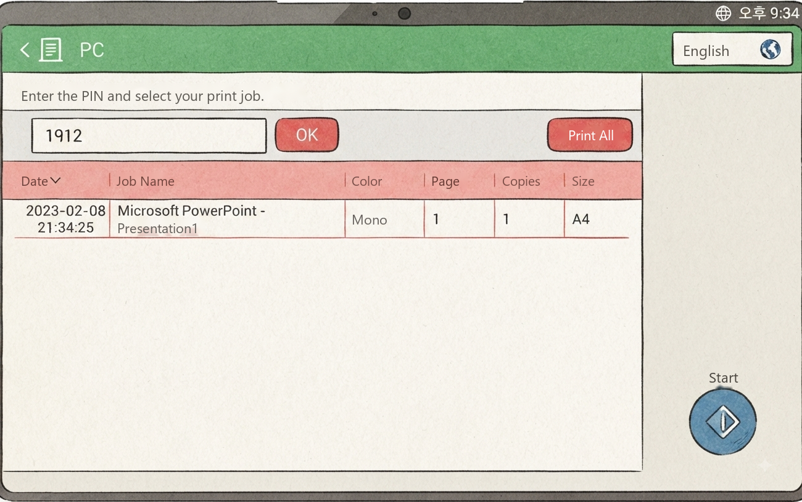
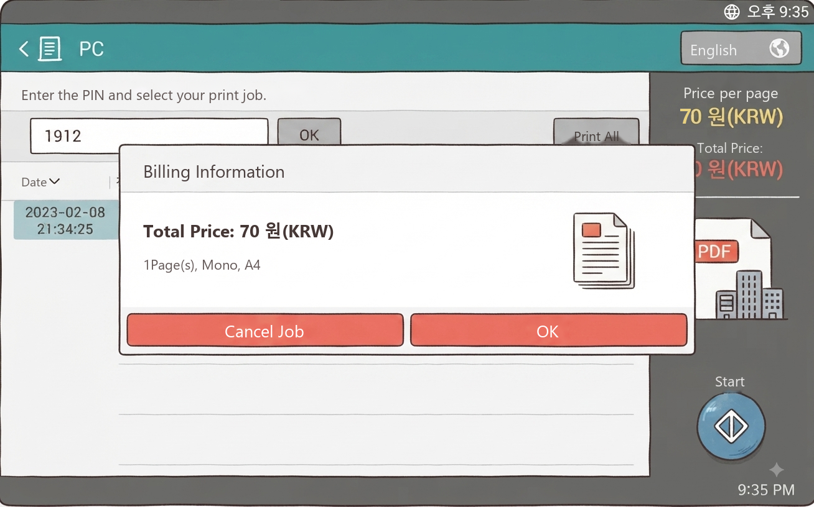

GUIDE · PRINT
How to Print
How to open your file on the store PC and print it on paper. Print settings for each program are also here.
How to open your file on the store PC and print it on paper. Print settings for each program are also here.
Open your file on the store PC and print it on paper. First open your file on the PC and send the print job. Then go to the printer machine, find your document with your PIN, and pay. Then it prints.
⚠️ After you finish on the PC, go to the printer machine. Find your document with the PIN you typed on the PC, and pay. Only then does it print. Nothing comes out until you pay at the printer machine's card reader.
※ Even if you already paid a fee on the PC (e.g. for issuing a document), you must pay again for printing at the printer machine's card reader.
![The [한국어] button at the top right of the printer machine's first screen](../images/common/mfp-lang-1.png)

If you change the printer after setting the options, you must set all the options again. Changing the printer changes all the options.
❌ This is the most risky case
You set the options without choosing a printer → later you change from B&W to Color → the options changed but you don't check → the options are applied strangely and the print comes out wrong.
✅ Always: choose printer → set options → preview → print button. If you changed the printer, check the options again from the start.

Open the file on the PC → [인쇄] (Print) → choose a printer
B&W / Color / Certificate (PIN9999)

Type the last 4 digits of your phone number
For the certificate printer, 9999 is entered automatically


Go to the printer machine in the store → choose the [Print] menu → choose [PC]
If the screen is off, touch it to turn it on

Type the PIN you set on the PC and press [OK] → choose your file from the list → press [Start]

Check total price · pages · color or not
If correct, press [OK]

When the card reader speaks, insert your IC card (credit/debit),
or hold Samsung Pay to the side with the Wi-Fi mark
Things people often miss when printing.
If you chose the Color printer [컬러출력], make sure the preview is also in color. If there are many pages, check every page.
Printed colors can be different from the PC screen. Even in the same file, colors can differ from page to page.
Before you pay, the printer machine shows the [Billing Information] screen. If it is different from what you expect, do NOT pay. Check the print options on the PC again.
This is the PDF program on the store PC (Adobe Acrobat Reader). Open the PDF file and press the printer icon or [파일] (File) → [인쇄] (Print), or press Ctrl and P together. The print screen below appears.

Double-click the file on the PC to open it.
Files in email or USB: save them to the PC desktop first.
It doesn't have to be the desktop. Just save it on the PC and remember where you saved it. Go there and double-click the file to open it. The desktop is the easiest place to find.
📱 Is your file on your phone? Tap the link below to see how to save it to the PC first.
How to save phone files to the PC →


The store PC has a view-only viewer with no editing. If it's different from where the file was made, the screen may look different.

Double-click the file on the PC to open it.
Files in email or USB: save them to the PC desktop first.
It doesn't have to be the desktop. Just save it on the PC and remember where you saved it. Go there and double-click the file to open it. The desktop is the easiest place to find.
📱 Is your file on your phone? Tap the link below to see how to save it to the PC first.
How to save phone files to the PC →


Print settings for Word · Excel · PowerPoint files. Each program looks a bit different, but you always go to [파일] (File) → [인쇄] (Print).

Double-click the file on the PC to open it.
Files in email or USB: save them to the PC desktop first.
It doesn't have to be the desktop. Just save it on the PC and remember where you saved it. Go there and double-click the file to open it. The desktop is the easiest place to find.
📱 Is your file on your phone? Tap the link below to see how to save it to the PC first.
How to save phone files to the PC →


For PDFs made in Canva · Miricanvas · web design programs · iPad note apps, open them in a browser, check in the preview that all colors show, and then print.

PDF files are set to open in Acrobat when you double-click. To open them in a browser (Edge · Chrome), do one of the two below.
① First open Edge or Chrome, then drag the file onto that window.
② Right-click the file and choose [연결 프로그램] (Open with) → Edge or Chrome.
Files in email or USB: save them to the PC desktop first. You just need to know where you saved it. The desktop is the easiest place to find.
📱 Is your file on your phone? Tap the link below to see how to save it to the PC first.
How to save phone files to the PC →
If your file is open in Edge, follow the Edge steps below. If it's open in Chrome, follow the Chrome steps (Steps 1–5). After you type the PIN and check the print queue window (Step 5), scroll down to Printing at the printer machine. It's the same for Edge · Chrome · ALSee.
With the file open in the browser, press [인쇄] (Print) or the printer icon.


In the printer box, choose the [흑백출력] (B&W) or [컬러출력] (Color) printer.

Press [기타 설정] (More settings) and choose or check options like paper size, two-sided/one-sided, pages per sheet.

Press the [인쇄] (Print) button at the bottom and the PIN box appears. Type any 4 digits. We suggest the last 4 digits of your phone number.


Look at the [흑백출력] (B&W) or [컬러출력] (Color) print queue window.
If the list is empty, your job has been sent to the printer machine.
If something is still in the list, please wait until it's gone.
With the file open in Chrome, press [인쇄] (Print) or the printer icon, or press Ctrl and P together.
The print window opens. The left is the preview, and the right is the print options.


In the settings on the right, [대상] (Destination) is where you choose the printer. Click it and the [흑백출력] (B&W) printer shows by default.
If you don't see [컬러출력] (Color), click [더보기...] (See more) below. The full printer list appears.
Choose the [흑백출력] (B&W) or [컬러출력] (Color) printer.

Click [설정 더보기] (More settings) to see options like paper size, two-sided, pages per sheet. Choose or check them as you want.
Press the [인쇄] (Print) button at the bottom and the PIN box appears. Type any 4 digits. We suggest the last 4 digits of your phone number.


Look at the [흑백출력] (B&W) or [컬러출력] (Color) print queue window.
If the list is empty, your job has been sent to the printer machine.
If something is still in the list, please wait until it's gone.
Use this to print photos or image files. You can also put several photos on one page. Open your photo with the ALSee (알씨) icon on the store PC desktop.

Double-click the file on the PC to open it.
Files in email or USB: save them to the PC desktop first.
It doesn't have to be the desktop. Just save it on the PC and remember where you saved it. Go there and double-click the file to open it. The desktop is the easiest place to find.
📱 Is your file on your phone? Tap the link below to see how to save it to the PC first.
How to save phone files to the PC →

Open the photo in ALSee, then choose [메뉴] (Menu) → [인쇄하기] (Print) at the top. You can also press Ctrl and P together.

Choose [컬러출력] (Color) or [흑백출력] (B&W). For color photos, always choose [컬러출력] (Color).

After you choose a printer, the print window below appears. To change paper size or portrait/landscape, press [프린터 설정] (Printer Settings) at the bottom left.

Set the paper size (A4 · B4 · A3, etc.) and portrait / landscape, then press [확인] (OK). You go back to the print window.

You're back in the print window. In the [크기설정] (Size) tab, check [용지 크기에 맞춤] (Fit to paper) to fill the paper with the photo. To keep the photo's shape, choose [용지 비율에 맞춤] (Fit to paper ratio).

In the [여백/위치] (Margins/Position) tab, set the top · bottom · left · right margins (mm) and where to place the photo.

In the [기타] (Other) tab, set how many to print. Check everything in the preview on the left, then press [인쇄] (Print).
Press [인쇄] (Print) and the PIN box appears. Type any 4 digits. We suggest the last 4 digits of your phone number.
Look at the [흑백출력] (B&W) or [컬러출력] (Color) print queue window.
If the list is empty, your job has been sent to the printer machine.
If something is still in the list, please wait until it's gone.
For TOEIC · TOEIC Speaking (YBM) certificates, first print on the PC with [증명서전용PIN9999] (certificate printer). If you choose another printer, the PC freezes!
A certificate comes out only after you ① send it to print on the PC with [증명서전용PIN9999], then ② find it at the printer machine with number 9999 and pay.
If you don't send it on the PC and only type 9999 at the printer machine, nothing comes out.
When you get your score report on the TOEIC website, the certificate opens in a viewer window.

Press the yellow [성적표 출력] (Print score report) at the top right of the viewer.
[테스트 출력] (Test print) is only for testing. Don't press it.
![Printer selection window, choosing [증명서전용PIN9999] from the list and pressing Print](../images/print/cert-ui-printer.png?v=1)
In the printer window, choose [증명서전용PIN9999] and press [인쇄] (Print).
[증명서전용PIN9999] doesn't show a PIN box. 9999 is entered automatically, so this is normal.
When it says printing is complete, you're done on the PC.
At the printer machine, press [Print] → [PC] and type 9999.
When the list appears, choose only your certificate, press [Start], then pay.
Do these steps after you type the PIN on the PC and send the print job. It's the same for Edge, Chrome and ALSee.
Go to the printer machine and press [Print] → [PC].
In the PIN box, type the 4-digit number you used on the PC and touch [OK].
When the list appears, carefully check what it shows: document name, time, B&W/color, two-sided/one-sided, pages, paper size, etc.
Make sure it is your document and the print options are what you wanted.
Touch your document in the list and it turns blue. Then touch [Start].
If there are several, touch only the ones to print so they turn blue, then press [Start]. Only the ones you chose are paid for and printed together.
Press [Print All] at the top right only when everything in the list is yours. The whole list is paid for and printed at once.
Finally, the [Billing Information] screen appears. Check everything carefully, and if the price is right too, touch [OK].
When the card reader speaks, insert your IC card (credit/debit), or hold Samsung Pay to it.
This page was translated from Korean. If anything looks wrong, please tell us on Naver TalkTalk. Screens on the machines are in Korean — the Korean button names are shown in [brackets].